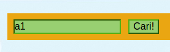

Game ini ditujukan untuk memenuhi Tugas Weekly Project (Week 5) Fase 0 di Hacktiv8
Prolog
Kakashi adalah seorang Ninja hebat dari Desa Konoha. Kakashi memiliki otak yang genius dan Sharingan dimata kirinya, sehingga dia menjadi ninja yang hebat. Berkat kehebatannya, Kakashi sampai "dibandrol" dengan harga yang tinggi apabila bisa menangkapnya hidup atau mati.
Namun dibalik kehebatannya, Kakashi memiliki sebuah kekurangan yaitu chakra yang dimilikinya sangat terbatas. Dengan keterbatasan chakranya, dia hanya bisa membuat beberapa Bunshin (bayangan). Oleh karena itu, Kamu hanya perlu menangkap Kakashi yang asli. Namun, sebelum bisa menangkap Kakashi yang asli, kamu harus menghancurkan kedelapan bunshin ciptaannya.
Cara Main
- Input Koordinat Pencarian
Koordinat sumbu y atau vertikal adalah dari A sampai G.
Koordinat sumbu x atau horizontal adalah dari 0 sampai 6.
Misal: B1 - Tekan tombol Cari!! atau tekan enter
Setelah input koordinat pencarian, langsung tekan tombol Cari!! atau tekan enter.

Ulangi terus sampai kamu berhasil menemukan Kakashi yang asli.
Kamu dapat mencoba game ini, disini
Penutup
Mohon maaf karena game ini masih sangat jauh dari sempurna. InsyaAllah akan dikembangkan lagi.
Saya ucapkan terima kasih karena telah berkunjung dan mencoba game ini.